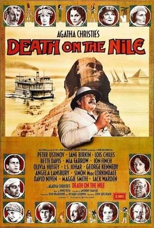

Death on the Nile

Starring: Peter Ustinov, David Niven, Simon MacCorkindale
Director: John Guillermin
Writer: Anthony Shaffer
Producer: John Knatchbull, 7th Baron Brabourne, Richard Goodwin
Death on the Nile is a 1978 British mystery film based on Agatha Christie's 1937 novel of the same name, directed by John Guillermin and adapted by Anthony Shaffer.
Trivia
- Won the Academy Award for Best Costume Design.
- Also nominated for: Golden Globe Award for Best Non-English Language Film; BAFTA Award for Best Actor in a Leading Role; BAFTA Award for Best Actress in a Supporting Role.
- Based on Death on the Nile (1937 novel by Agatha Christie).
- EMI Films had scored a huge success in 1974 with a film version of Murder on the Orient Express, and wanted a follow-up.
- The plan was to make Death on the Nile, but the rights could not be obtained, so in July 1975 EMI announced they would film Evil Under the Sun instead.
- The movie was made during a period of expansion for EMI Films under Michael Deeley and Barry Spikings, who were increasingly aiming at the international market with films like The Deer Hunter and Convoy.
Filming Locations
- Egypt
- Pinewood Studios
- The initial scenes set in England were filmed at the village of Hambleden, the main gates of Cliveden in Buckinghamshire and at the country house Compton Wynyates in Warwickshire.
- The production spent seven weeks on location in Egypt in late 1977.
Previous Showings
1 Run • 1 Festival
All runs on record (1):
- August 14 - 17, 2010Summer 2010w/ Murder on the Orient Express